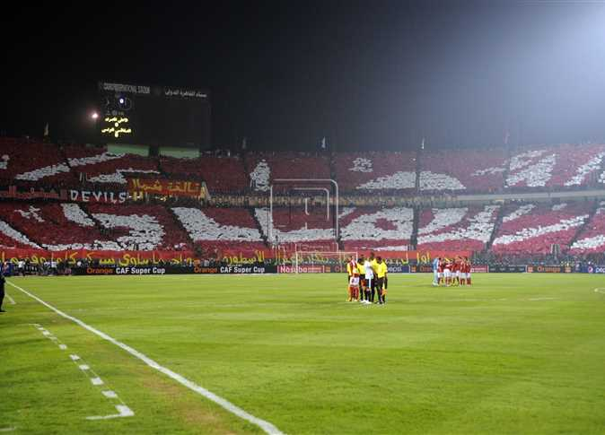

The Club of the Century
Where is the most decorated football club in history from? Not Europe. Not Brazil. It is from Cairo, Egypt. Founded on April 24, 1907, Al Ahly was built as a beacon of national resistance, legacy, and African excellence. It is not just a football club; it is an identity for millions who bleed red and golden glory.
With over 120 official titles, the Red Eagles soar above the rest of the footballing world. From a record number of Egyptian Premier League triumphs to a legendary dominance in the CAF Champions League, Al Ahly’s trophy room reflects an unyielding hunger for victory. Every match at El Tetsh in Gezira carries the echoes of generations, a living testament to the spirit of Cairo.
Glorious Achievements
- 🏆 12x African Champions
- 🌍 African Club of the 20th Century
- 🥇 27 International Titles
- 🥉 4x FIFA Club World Cup Medals
- 🥇 African-Asian-Pacific Cup Champions
AL AHLY SC has a remarkable history in international football, establishing itself as one of the most successful clubs in Africa and the world. Known as the Club of the Century, Al Ahly holds a record-breaking number of CAF Champions League titles, which has consistently qualified them for the prestigious FIFA Club World Cup. On the global stage, the Egyptian powerhouse has delivered historic performances against elite international teams, earning multiple bronze medals in the tournament and showcasing the strength of African football to the world.